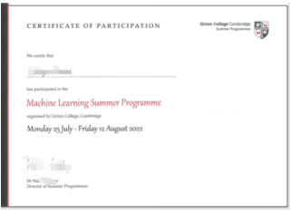

学院通知 · 教学通知
【大川视界】2026暑期英国剑桥大学神经生物学访学项目报名通知
发布时间：2026-04-23
为推进学校双一流建设，提升学生国际交流能力，开拓全球视野，培养具有国际竞争力的人才，现启动2026年暑期英国剑桥大学神经生物学访学项目的报名工作，项目详细介绍见附件一，现将有关事项通知如下： 一、学校简介 创建于1209年的剑桥大学，是英国乃至世界上历史最悠久的大学之一，同时也被公认为是世界上最顶尖的高等教育机构之一，在艺术与人文、数学、物理、工程与技术、医学、法学、商科等诸多领域拥有崇高的学术地位及广泛的影响力。 2026年USNEWS全球大学排名第5；2026年QS世界大学综合排名第6；生命科学专业世界排名第2。 格顿学院成立于1869年，已有150多年的历史，是剑桥最重要的学院之一，学生总量排名前10，以活跃、轻松和友善的学习氛围著称。学院提供丰富的本科与研究生课程，领域包括工程、计算机科学、建筑、经济学、历史、地理、人文社科、数学、法律、医学、音乐、国际关系、社会学、语言学等。 二、项目简介 【项目时间】 2026年8月2日-8月15日 【项目内容】 21世纪被世界科学界公认为是生物学、脑科学的时代，对人脑语言、记忆、思维、学习等高级认知功能进行多学科、多层次的综合研究已经成为当代科学发展的主流方向之一。本项目是英国剑桥大学设计的访学项目，课程将围绕人脑功能与神经系统等尖端课题进行深入探讨，并分析这些领域如何影响人的行为与认知，以及如何在相关行业开展实际应用。 【授课模式】 项目为期两周，包含总共24小时授课（相当于32学时）； 授课形式将包括系列专题讲座，以下为讲座计划所涉及的主题： 了解大脑的方式 神经解剖学与神经发育 神经元的电子特性 突触传递与突触可塑性 了解感官系统与听觉系统 了解视觉系统 化学反应、体感作用与疼痛 神经系统对于运动的控制 人的情感与动机、记忆、语言 神经生物学理论与知识在相关行业的运用 【特色与优势】 【真正的官方剑桥项目】本项目由剑桥大学格顿学院官方主办，项目信息可在学院官网直接查询验证。学院全程负责项目组织和教学管理，匹配优质师资，教学质量有保障，学生可深度体验世界顶级名校的教学模式与学术氛围。 【丰富的学习体验】引领学生深入探索人脑科学与神经系统等前沿主题，收获丰富充实的专业知识；接受未来在剑桥读研深造的贴心指导，配以剑桥当地文化体验，以及伦敦一日游等活动，全面提升学生的学习体验。 【官方品质保障】学生有权使用剑桥大学官方教学系统Moodle, 入住剑桥大学格顿学院学生宿舍，安全有保障；可享受各类学校资源，在学生助理带领下参与丰富的文化体验活动。 【高含金量的收获】学生可获得剑桥大学格顿学院颁发的正式的官方项目证书与成绩单，证书包含唯一认证编码，可通过剑桥大学官方渠道验证真伪，助力个人背景提升。 【项目费用】 项目总费用 约人民币3.36万元 费用包括： 学费、格顿学院住宿、学校设施使用、学院用餐（包括项目所安排的晚宴与下午茶）、剑桥与伦敦的文化体验活动（剑桥由学生助理陪同，伦敦含大巴）、医疗与意外保险、接送机以及项目服务费 费用不包括： 国际机票、英国签证费与其他个人消费，景点门票（如国王学院、康河游船等），剑桥游览参访涉及的公共交通费用，伦敦游览期间的餐费和自由活动涉及的交通费。 更多项目详情可咨询项目方老师，联系方式见文末。 三、项目收获 项目学生由剑桥大学进行统一的学术管理与学术考核，顺利完成学习后，学生将获得剑桥大学格顿学院颁发的成绩单与项目证书。 图：剑桥大学项目证书与成绩单样图 四、申请条件 （一）我校全日制在校生，道德品质好，在校期间未受过纪律处分，身心健康，能顺利完成海外学习任务。 （二）家庭具有一定经济基础，能够提供项目所需费用。 （三）通过学生所在学院/部或国际处的相关资格审核。 （四）生物学或医学相关背景；语言成绩：托福79，或雅思6.0，或四级500分，或六级470分，或专四/专八通过，或Duolingo105，或Versant51；大一学生可接受高考128以上。 五、资助标准 学生可申请“大川视界”院级项目资助（之前已接受过资助的不可再次享受），具体资助金额以学校最终核定为准。 根据相关规定，拔尖计划2.0和强基计划学生在项目结束后，交流成绩获得良及以上的学生，可以提出出国交流资助答辩申请，学院组织专家进行等级评审后可获得一定资助，资助金额以学院最终核定为准。已参加过出国交流资助的拔尖计划2.0和强基计划学生，不再具有资助资格，但仍可申请本项目。 六、报名时间及方式 报名截止日期：2026年5月8日 参加项目的学生需完成【院内报名】和【项目方】报名，二者缺一不可，否则视为报名无效。 1、【院内报名】许老师：028-85416955，028-85412478。 请有意愿参加项目的同学填写项目报名申请表（附件二）及项目报名汇总表（附件三），并于5月8日之前将纸质版报名申请表及相关证明材料提交至望江校区生命科学学院本科教务办B210。 2、【项目方中国办公室】吴老师：13340248524。 报名成功后，将由第三方机构安排面试、审核及后续相关工作。 注： （1）、本项目由第三方机构执行，申请前，请结合自身实际情况，征得家长同意，详细了解项目内容及费用等细节。 （2）、上述项目需与第三方机构签订协议；自行向第三方机构缴纳项目费用。 （3）、此通知为该项目唯一报名通道，学院最终的名单才是报名成功的凭证，其他渠道无效，不纳入学校管理，自行承担风险，无法进行学分转换，申请任何资助等。
